昭和５７年４月１８日 大阪駅
ちなみに世間では、４月１日に５００円玉発行されていて、この２日後、福岡市営地下鉄が開業しています。
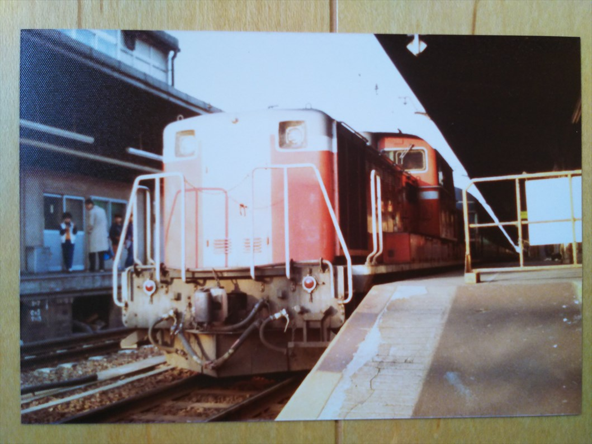
大阪駅に到着した急行だいせん。
昔はこのあたりまで入りこんでも全く問題無しやっ
たよなぁ。
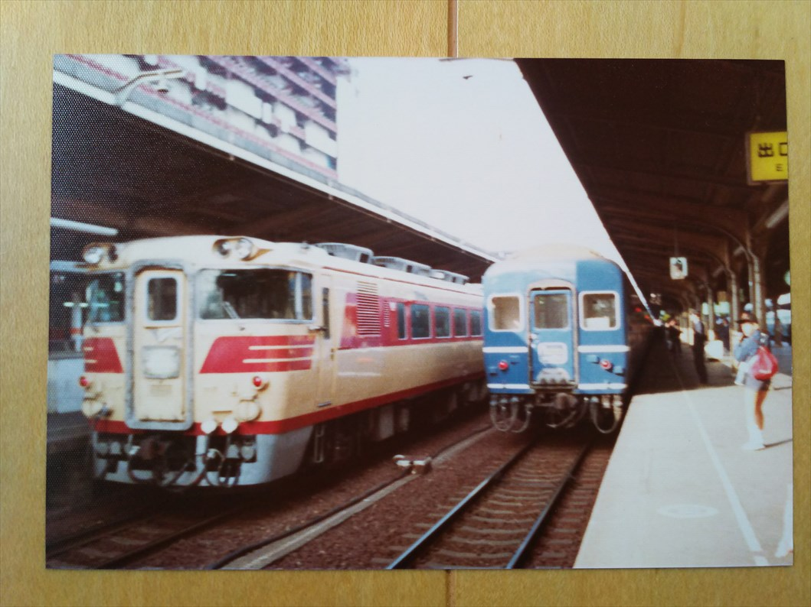
まつかぜ１号の横に到着した特急日本海２号。まつ
かぜは入線が早くて、並びで撮れたんよね。
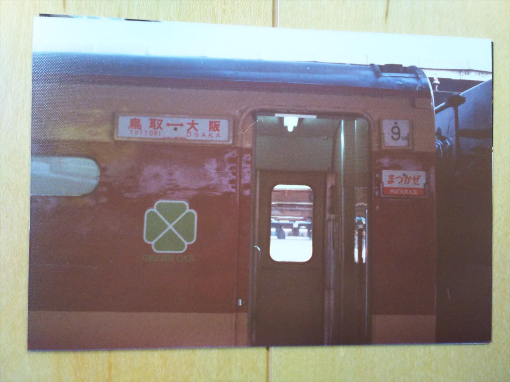
なんで鳥取編成のほうの写真を撮ったんやろ。
この頃、まだ基本編成は大阪博多のサボさしてたは
ずやのに・・・。もったいない。
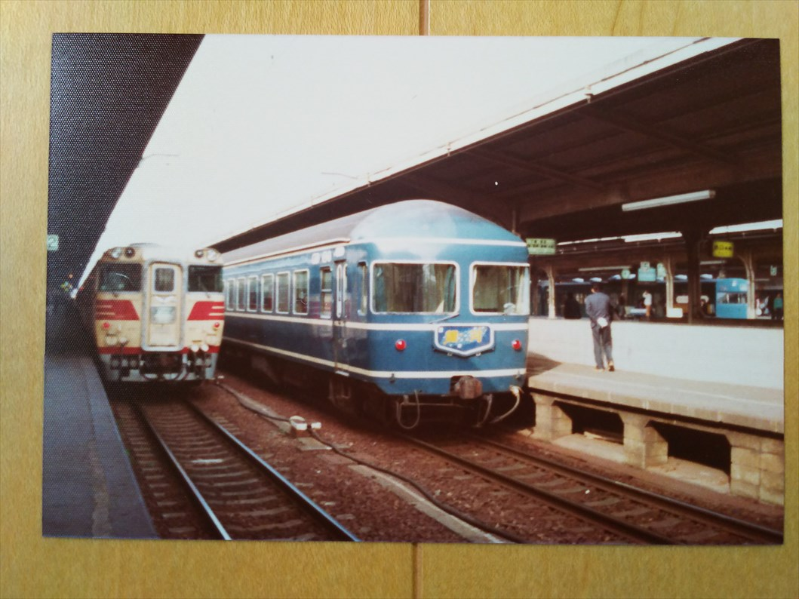
まつかぜ１号の横に到着した急行銀河。８：００着
と８：００発なんで、少しでも銀河が遅れると並ん
で撮られへんのよね。
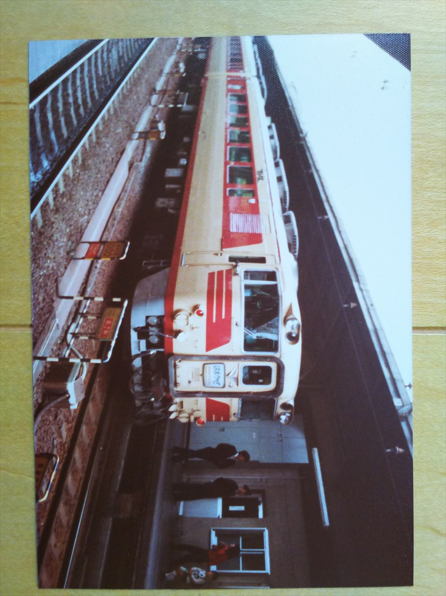
キハ８２時代のはまかぜ。ヘッドマークも文字だけ
のシンプルな時代やね。キハ８２は絵入より文字だ
けのほうが断然いいよな。
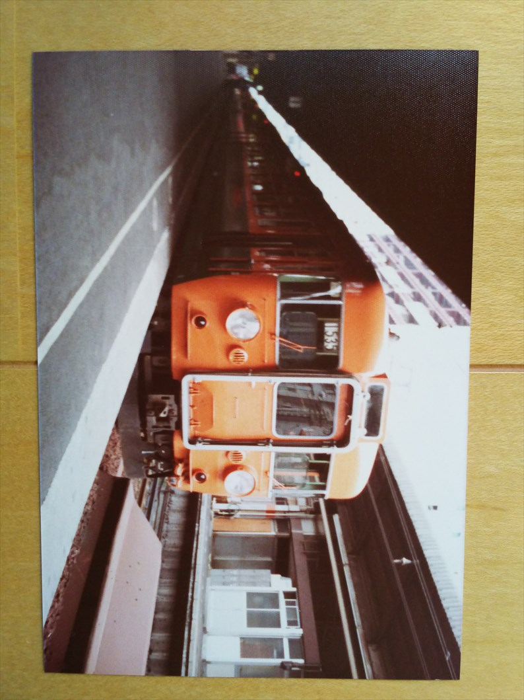
急行比叡と思われます。北陸系の急行と比べてヘッ
ドマークもなく、かなり地味な存在でした。
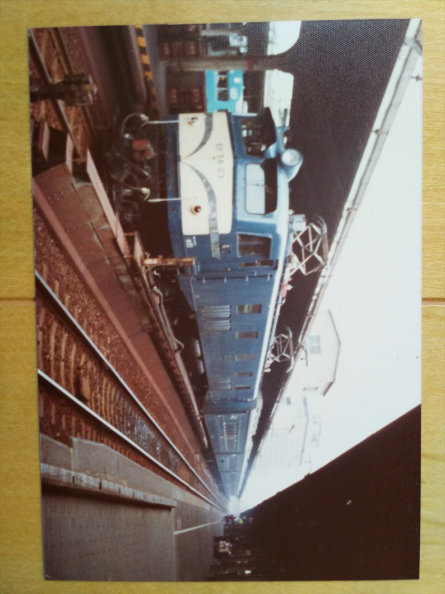
突然このお座敷列車が来た時は仰天して大喜びでし
た。お座敷列車の実物を見たのはこの時が最初で最
後。
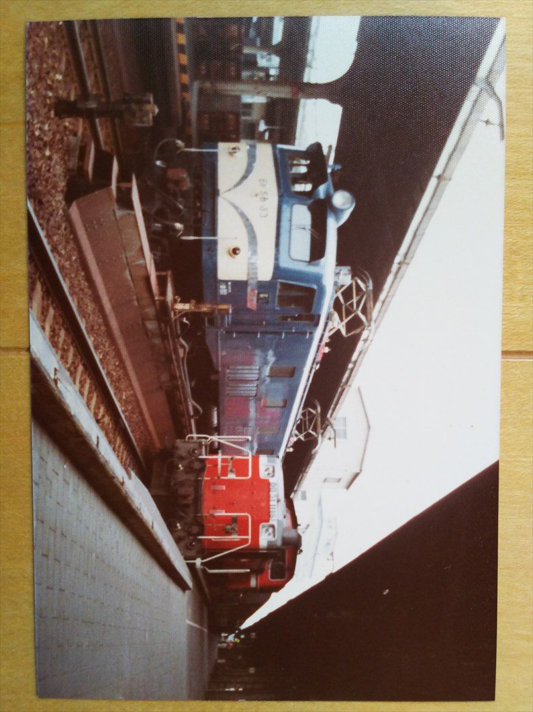
その横に福知山線の普通が入線。
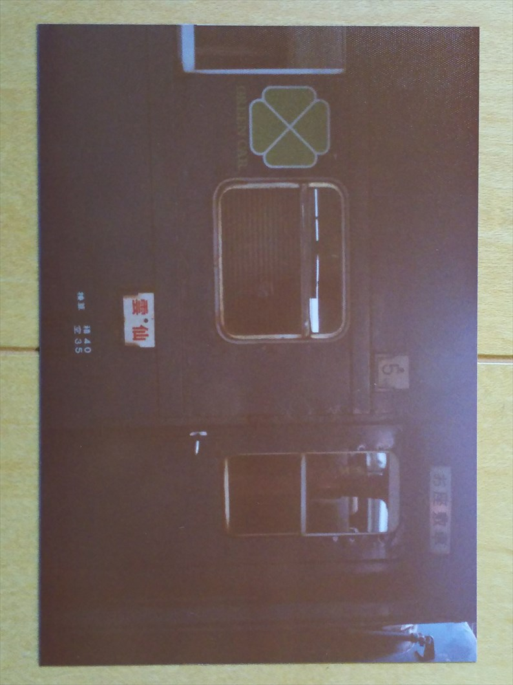
客はおらず、回送でした。名前からすると、九州持
ちの編成ですね。
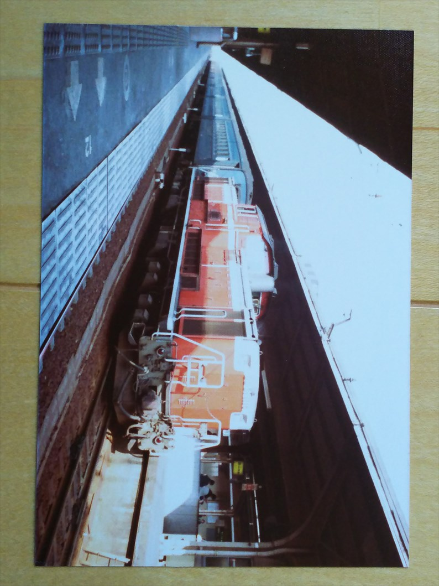
お座敷列車が行ったあとの福知山線鈍行。
そう、昔は長距離列車は始発駅でゆっくり停まって
たよなぁ。そういう余裕が欲しいっす。
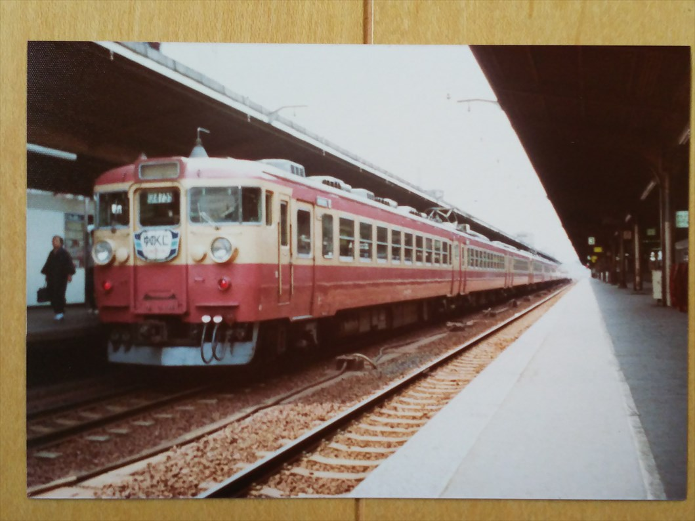
急行ゆのくに。そう、この頃って、おばあさん世代
は着物の人が多かったわ。
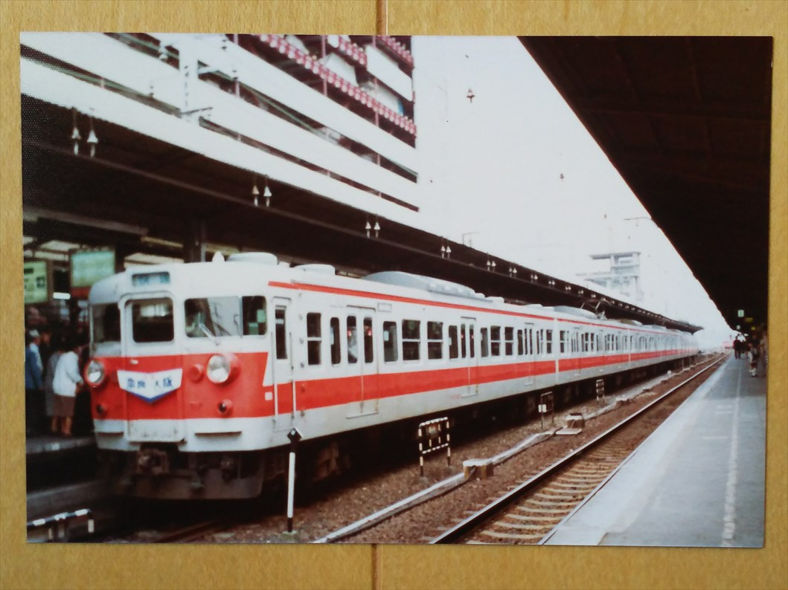
奈良行きの快速。大阪地下駅が出来ると、今後奈良
行き快速はどうなるんでしょうか・・・